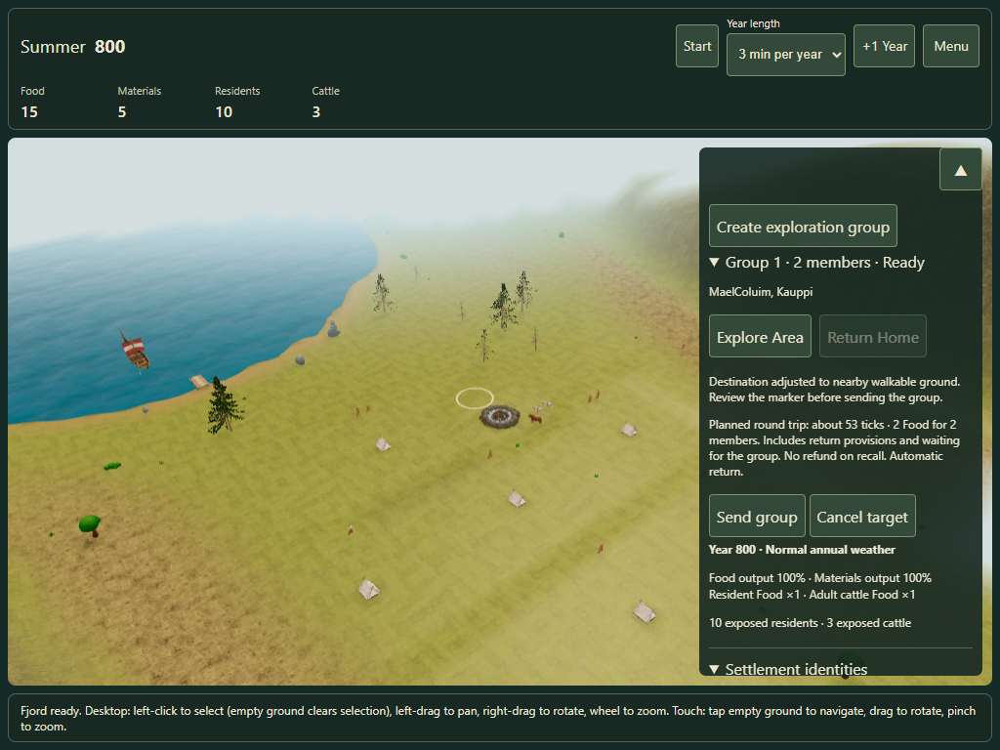
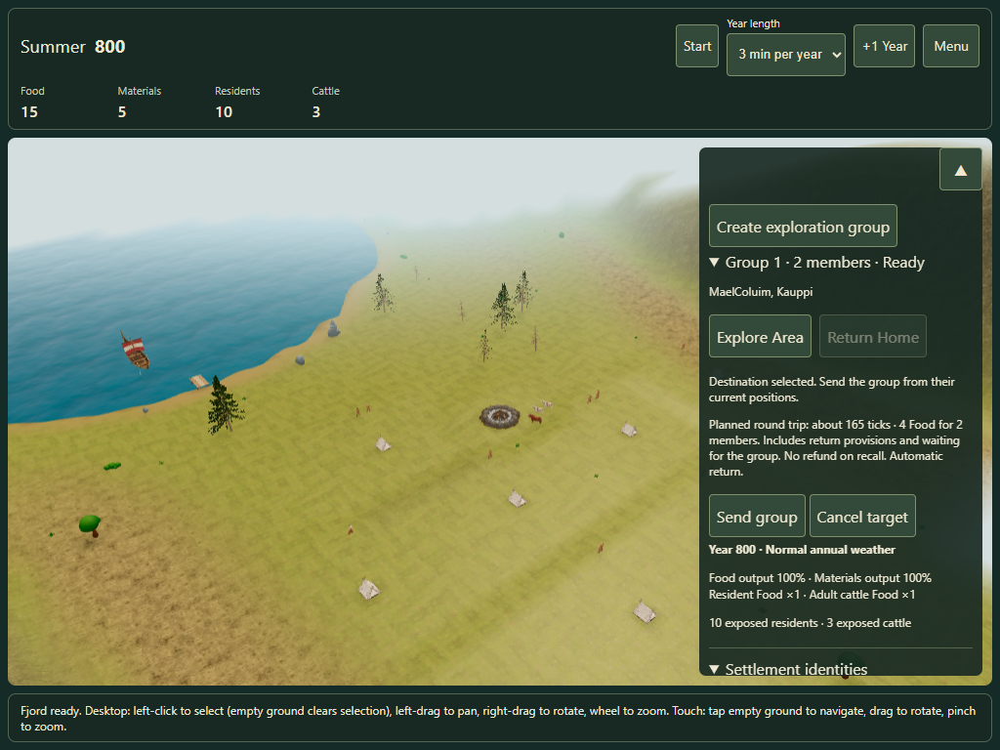
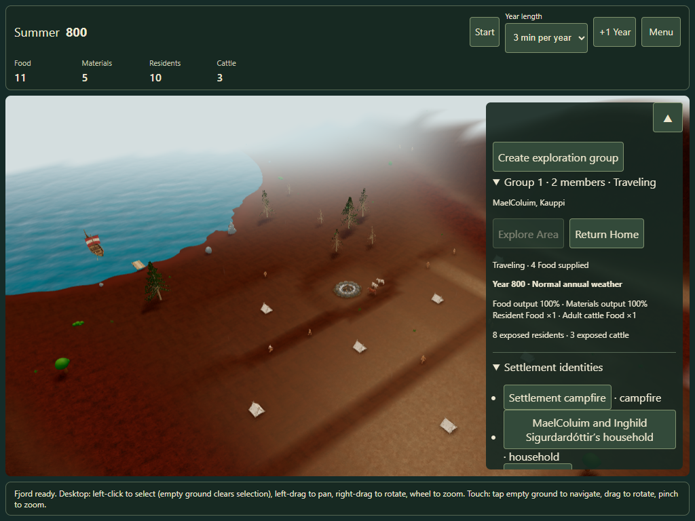
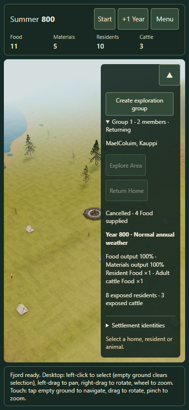

Exploration groups · Contextual controls & individual routes
With no selection, use Create exploration group. Groups receive numbered names automatically. Select a resident, choose their group and use Add to group. Clear the selection to expand each group and choose Explore Area or Return Home.
Every member leaves from their own current position, follows a separate safe route and uses the real Run animation. Early arrivals wait at the target; the group then explores and returns automatically. Return Home immediately reverses each member along their own reached route. The configured canonical speed and provisions are unchanged.
Existing discovery campaigns retain their knowledge. If recovery is offered, choose the intended campaign; the discovery query never silently changes saved settings.
Touch destination correction: a blocked cell can propose nearby safe ground within 8 m. Review the relocated ring before sending; no proposal spends Food. Correction evidence

Touch targeting with explicit nearby-ground correction Add the selected resident
Add the selected resident
Confirm the whole-trip provisions
Individual travel with gradual discovery
Expandable group actions on touchDesktop Edge with touch emulation is verified. Physical-device review of this revised interaction is still open; the combined prototype stays opt-in.